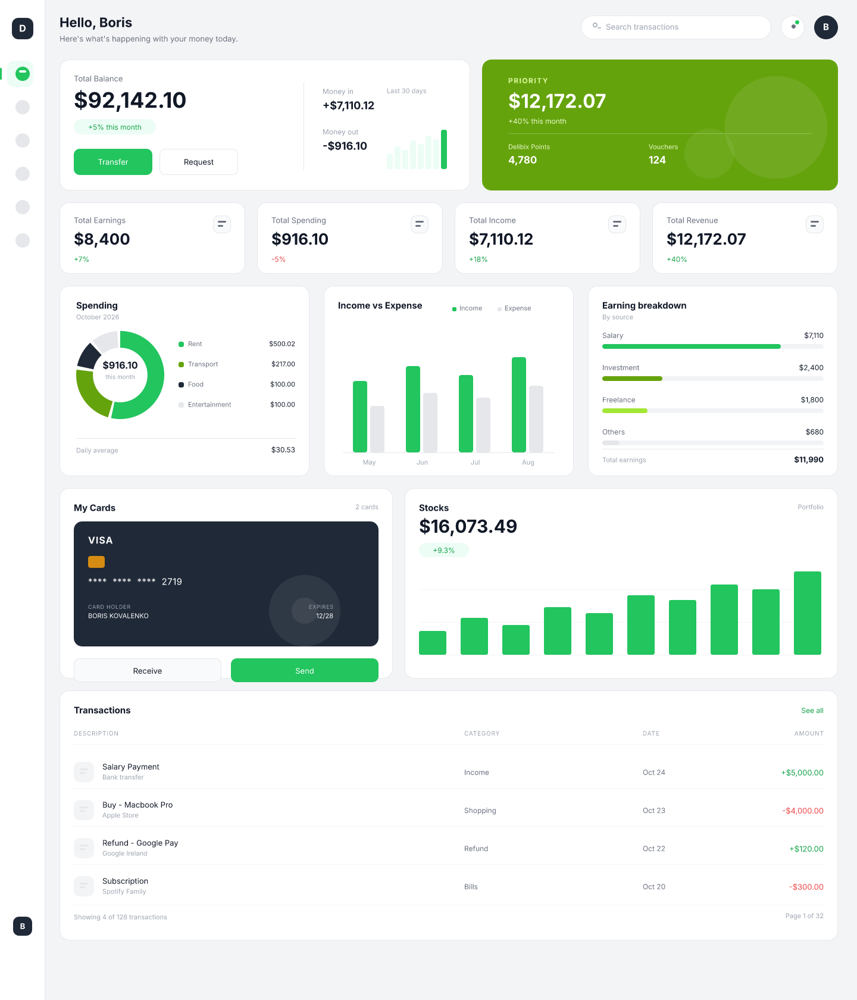
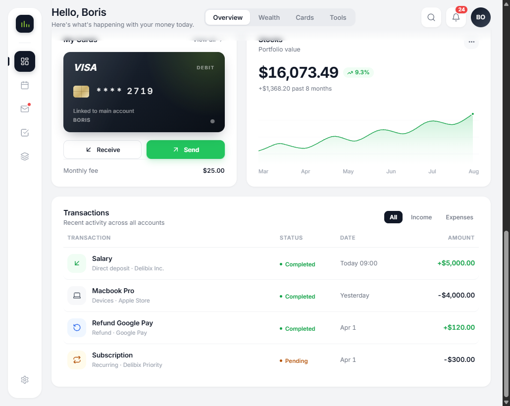
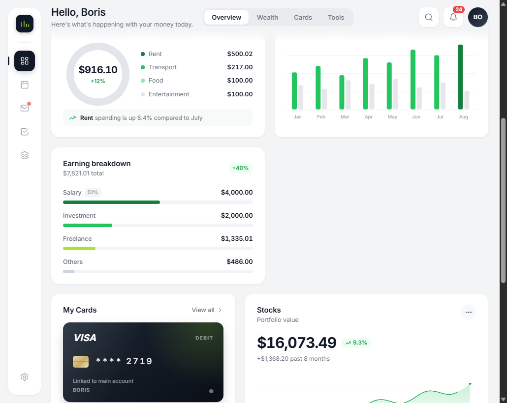

UI-концепт · 2026
Финансовый дашборд
Обзорный экран личного кабинета с балансом, KPI, диаграммами и транзакциями. Макет собран в FigCraft и проверен в рабочем HTML-прототипе.
Контекст
Задача — собрать обзорный экран кабинета, где пользователь видит баланс, динамику и последние операции, не переходя между разделами.
Макет собран в FigCraft: 237 узлов на артборде 1440×1680. Логику экрана проверил в рабочем HTML-прототипе, собранном из тех же блоков.
Моя роль
Отвечал за структуру экрана, визуальный язык и сборку макета. Прототип верстал сам, чтобы проверить поведение блоков в браузере.
Что сделано
Экран собран из повторяемых блоков: sidebar, карточка баланса, четыре KPI-карточки, кольцевые диаграммы, карта Visa, блок акций и список транзакций.



Процесс
-
Структура
Разложил данные по приоритету: баланс и KPI сверху, детали ниже, транзакции в конце экрана.
-
Визуальный язык
Задал сетку, типографику и состояния карточек; диаграммы и карта получили единый стиль.
-
Прототип
Собрал HTML-прототип из тех же блоков и проверил плотность, скролл и адаптив.
Результат
- Готовый макет на 237 узлов и рабочий HTML-прототип, который открывается без сборки.
- Набор переиспользуемых карточек и графиков для следующих экранов кабинета.
- Проверенная иерархия: главное видно на первом экране, детали — по мере скролла.
Обсудить похожую задачу?
Расскажите о проекте — отвечу и предложу, с чего начать.